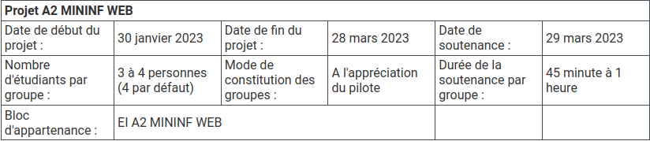
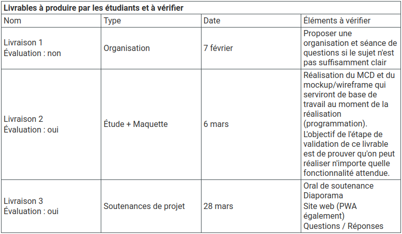

Retour
Énoncé du projet
1. Caractéristiques globales du projet
Aujourd'hui, les étudiants effectuent leurs recherches de stage en
entreprise en activant leurs réseaux personnels et professionnels
(LinkedIn, anciennes promotions, etc.), en postulant à des offres.
Afin de rendre cette étape de recherche de stage plus facile et pratique,
il serait nécessaire de disposer d'un site web qui regroupe différentes
offres de stage, et qui permettra de stocker les données des entreprises
ayant déjà pris un stagiaire, ou qui en recherchent un.
Ce projet est découpé en trois phases :
-
La première phase est consacrée à l'appropriation du présent cahier des
charges, la composition des groupes de travail et son organisation ;
-
Une deuxième phase de modélisation (MCD) et préparation de la maquette
(mockup) ;
-
Une dernière phase qui permettra la réalisation du site web
(développement et base de données).
1.1 Déroulement
Le projet se déroule du 30/01/2023 au 29/03/2023. Vous travaillerez par
groupe de 3 à 4 personnes. Par défaut 4. La soutenance se déroulera le
29/03/2023. Elle doit être composée d'une présentation de 5 à 10 minutes
max et d'une démonstration (soit en présentant vous même une partie de
l'application, soit en répondant aux sollicitations du jury). Comme a
l'accoutumée, des questions/réponses individuelles suivront. Compter entre
45 minutes et une heure par groupe.

1.2 Livrables

2. Cahier des charges du projet
La réalisation d'une application web pour les stages se trouve être un
projet plein d'ambitions. Le site va permettre d'informatiser l'aide à la
recherche de stages en regroupant toutes les offres de stage. Il permettra
entre autre d'enregistrer les données des entreprises ayant déjà pris un
stagiaire, ou qui en recherchent un.
Ceci facilitera l'orientation des nouveaux étudiants dans leurs recherches
de stages.
Les offres de stage seront notamment enregistrées par compétences, ce qui
permettra à l'étudiant de trouver un stage en rapport avec son profil.
L'application doit fournir différentes interfaces à destination des
différents profils d'utilisateurs. Plusieurs catégories de fonctionnalités
devront être déployées sur la plateforme.
Les profils d'utilisateurs sont l'administrateur, le pilote de promotion
et l'étudiant. Les catégories de fonctionnalités attendues sont la gestion
des rôles, la gestion des entreprises, la gestion des offres de stage et
la gestion des candidatures. Selon le profil d'utilisateur, ce dernier
pourra accéder à certains services et pas d'autres. Seul l'administrateur
à accès à l'ensemble des fonctionnalités proposées par la plateforme.
Ce cahier des charges laisse place à des interprétations, différentes
options possibles et des champs de libertés. Vous devez analyser, faire
ressortir les zones d'ombres, les options et autres incertitudes de
manière à réfléchir à la meilleure ligne de conduite pour votre groupe et
ainsi de proposer à votre client (Pilote de promotion).
Outre les fonctionnalités techniques, votre site devra s'adapter au mieux
en fonction de l'équipement de l'utilisateur et respecter les bonnes
pratiques de codage côté back-end et front-end. Par ailleurs vous
veillerez à la conformité légale de votre site. Enfin, vous devrez mettre
en place une stratégie de test et de déploiement de votre application.
2.1 Spécifications fonctionnelles
Vous trouverez dans cette section les spécifications fonctionnelles du
projet. Une matrice de gestion des rôles est disponible en Annexe. Le
critère « data » représente les données à fournir ou que l'on peut fournir
en entrée de procédure.
Gestion d'accès
Dans cette catégorie la fonctionnalité attendue est :
-
SFx 1 – Authentifier
-
Description : Cette fonctionnalité doit permettre à l'utilisateur de
s'authentifier. En cas de réussite de la procédure, l'utilisateur
disposera des droits auquel son profil appartient.
- Data : [login – mot de passe]
Gestion des entreprises
Dans cette catégorie les fonctionnalités attendues sont :
-
SFx 2 – Rechercher une entreprise
-
Description : Cette fonctionnalité doit permettre à l'utilisateur de
rechercher la fiche d'une entreprise sur la base de plusieurs
critères. Il sera possible de consulter les offres liées à
l'entreprise et de visualiser les différentes appréciations
(entreprises / stages).
-
Data : [nom – secteur d'activité – localité(s) – nombre de
stagiaires CESI déjà acceptés en stage – évaluation des stagiaires –
confiance du Pilote de promotion].
-
SFx 3 – Créer une entreprise
-
Description : Cette fonctionnalité doit permettre à l'utilisateur de
créer la fiche d'une entreprise.
-
Data : [nom – secteur d'activité – localité(s) (Attention, il est
possible pour une entreprise de disposer de plusieurs sites) –
nombre de stagiaires CESI déjà acceptés en stage – confiance du
Pilote de promotion].].
-
SFx 4 – Modifier une entreprise
-
Description : Cette fonctionnalité doit permettre à l'utilisateur de
créer la fiche d'une entreprise.
-
Data : [nom – secteur d'activité – localité(s) (Attention, il est
possible pour une entreprise de disposer de plusieurs sites) –
nombre de stagiaires CESI déjà acceptés en stage – confiance du
Pilote de promotion].
-
SFx 5 – Évaluer une entreprise
-
Description : Cette fonctionnalité doit permettre à l'utilisateur
d'évaluer une entreprise qui propose des stages. Cela peut être basé
sur une connaissance initiale de l'entreprise (Pilote de promotion)
au moment où est créée l'entreprise dans le système, ou bien lors de
la clôture d'un stage (Etudiant).
-
Data : [Selon les critères du groupe projet avec la validation du
Pilote de promotion].
-
SFx 6 – Rendre invisible pour les étudiants
-
Description : Cette fonctionnalité doit permettre à l'utilisateur de
sortir une entreprise du système. Les données connexes seront alors
supprimées ainsi que les liens aux autres entités. Attention
toutefois à la traçabilité dans le temps des informations.
-
SFx 7 – Consulter les statistiques des entreprises
-
Description : Cette fonctionnalité doit permettre à l'utilisateur de
comparer les critères des entreprises entre elles
- Data : [Voir SFx 7 et SPx 3].
Gestion des offres de stage
Attention, vous devez réfléchir à la meilleure manière de gérer les
compétences (gestion des stages). Dans cette catégorie les fonctionnalités
attendues sont :
-
SFx 8 – Rechercher une offre
-
Description : Cette fonctionnalité doit permettre à l'utilisateur de
rechercher une offre sur la base de plusieurs critères.
-
Data : [compétences – localité(s) (Attention, il est possible pour
une entreprise de disposer de plusieurs sites) – entreprise – durée
du stage – base de rémunération – date de l'offre - nombre de places
offertes aux étudiants].
-
SFx 9 – Créer une offre
-
Description : Cette fonctionnalité doit permettre à l'utilisateur de
créer une offre et de la paramétrer.
-
Data : [compétences – localité(s) (Attention, il est possible pour
une entreprise de disposer de plusieurs sites) – entreprise – durée
du stage – base de rémunération – date de l'offre - nombre de places
offertes aux étudiants].
-
SFx 10 – Modifier une offre
-
Description : Cette fonctionnalité doit permettre à l'utilisateur de
modifier une offre ainsi que ses paramètres.
-
Data : [compétences – localité(s) (Attention, il est possible pour
une entreprise de disposer de plusieurs sites) – entreprise – types
de promotions concernées – durée du stage – base de rémunération –
date de l'offre - nombre de places offertes aux étudiants].
-
SFx 11 – Supprimer une offre
-
Description : Cette fonctionnalité doit permettre à l'utilisateur de
retirer du système une offre.
-
SFx 12 – Consulter les statistiques des offres
-
Description : Cette fonctionnalité doit permettre à l'utilisateur de
comparer des offres entre elles sur la base de critères
-
Data : [compétences – localité(s) (Attention, il est possible pour
une entreprise de disposer de plusieurs sites) – entreprise – types
de promotions concernées – durée du stage – base de rémunération –
date de l'offre - nombre de places offertes aux étudiants]].
Gestion des pilotes de promotions
Dans cette catégorie les fonctionnalités attendues sont :
-
SFx 13 – Rechercher un compte Pilote
-
Description : Cette fonctionnalité doit permettre à l'utilisateur de
rechercher un compte Pilote.
- Data : [nom – prénom – centre – promotions assignées].
-
SFx 14 – Créer un compte Pilote
-
Description : Cette fonctionnalité doit permettre à l'utilisateur de
créer un compte Pilote.
- Data : [nom – prénom – centre – promotions assignées].
-
SFx 15 – Modifier un compte Pilote
-
Description : Cette fonctionnalité doit permettre à l'utilisateur de
créer un compte Pilote.
- Data : [nom – prénom – centre – promotions assignées].
-
SFx 16 – Supprimer un compte Pilote
-
Description : Cette fonctionnalité doit permettre à l'utilisateur de
supprimer un compte Pilote.
Gestion des étudiants
Dans cette catégorie les fonctionnalités attendues sont :
-
SFx 17 – Rechercher un compte Etudiant
-
Description : Cette fonctionnalité doit permettre à l'utilisateur de
rechercher un compte Etudiant.
- Data : [nom – prénom – centre – promotion].
-
SFx 18 – Créer un compte Etudiant
-
Description : Cette fonctionnalité doit permettre à l'utilisateur de
créer un compte Etudiant.
- Data : [nom – prénom – centre – promotion].
-
SFx 19 – Modifier un compte Etudiant
-
Description : Cette fonctionnalité doit permettre à l'utilisateur de
modifier un compte Etudiant.
- Data : [nom – prénom – centre – promotion].
-
SFx 20 – Supprimer un compte Etudiant
-
Description : Cette fonctionnalité doit permettre à l'utilisateur de
supprimer un compte Etudiant.
-
SFx 21 – Consulter les statistiques d'un compte Etudiant
-
Description : Cette fonctionnalité doit permettre à l'utilisateur de
suivre la recherche de stage d'un compte Etudiant.
- Data : [nom – prénom – centre – promotion].
Gestion des candidatures
Dans cette catégorie les fonctionnalités attendues sont :
-
SFx 22 – Ajouter une offre à la wish-list
-
Description : Cette fonctionnalité doit permettre à l'utilisateur
d'ajouter l'offre à sa liste d'intérêts pour lui permettre de garder
une trace des offres qu'il souhaite conserver.
-
SFx 23 – Retirer une offre à la wish-list
-
Description : Cette fonctionnalité doit permettre à l'utilisateur de
retirer une offre présente dans sa liste d'intérêts.
-
SFx 24 – Postuler à une offre
-
Description : Cette fonctionnalité doit permettre à l'utilisateur
d'envoyer un email à l'entreprise émettrice de l'offre
- Data : [cv – lm]
-
SFx 25 – Informer le système de l'avancement de la candidature step
1
-
Description : Cette fonctionnalité doit permettre au système
d'avertir le Pilote qu'une réponse à une offre a été formulée par un
Etudiant. La modalité est à discuter avec l'équipe projet et le
client.
- Data : [offre]
Accès mobile du site web
Une fois que l'application web est mise en place, il va falloir la
transformer en application mobile en utilisant le PWA.
Ceci permettra à votre Web App d'être installée comme une application
native (icone sur les écrans du mobile, navigation plein écran, navigation
hors-ligne...).
2.2 Spécifications techniques
Vous trouverez ci-dessous les spécifications techniques à respecter.
-
STx 1 – Architecture
- Architecture MVC obligatoire
-
STx 2 – Conformité du code
-
Chaque page HTML doit contenir une syntaxe précise constituée de
balises sémantiques HTML5 (et éventuellement de balises spécifiques
à un framework). Chaque page HTML générée doit être validée par le
validateur W3C. Le code CSS doit être bien structuré et cohérent.
Coté PHP, l'usage de la POO est obligatoire, de même que le respect
des principales conventions PSR.
-
STx 3 – Contrôle des champs des formulaires
-
Les champs des formulaires devront être vérifiés/validés coté front
comme back.
-
STx 4 – Interdiction d'utiliser les CMS
-
Pas d'utilisation de CMS. Les bibliothèques et frameworks restent
autorisés.
-
STx 5 – Environnements
- Apache
-
HTML5/CSS3/JS : l'utilisation d'un préprocesseur CSS (LESS, Sass...)
est optionnelle.
- jQuery
-
PHP : Utilisation du PHP pour la partie back-end. Le code PHP doit
respecter les bonnes pratiques de codage (PSR-12)
-
Base de données : au choix par exemple MySQL, PostgreSQL, MongoDb...
-
STx 6 – Moteur de template
-
Tout le site doit utiliser un moteur de template coté Backend (ex :
Smarty), le code devra faire bon usage de ce moteur.
-
STx 7 – Affichage dynamique
-
Au moins une des pages du site doit recevoir des données provenant
d'une requête externe, sans devoir recharger la page (ex :
chargement d'informations dans un modal, affichage d'un tableau
paginé...) à l'aide d'AJAX.
-
STx 8 – Pagination
-
Chaque affichage de données pouvant recevoir de nombreux résultats
(liste d'utilisateurs, d'entreprises, d'offres...) doit contenir une
pagination.
-
STx 9 - Vhosts
-
Un ou plusieurs vhosts seront utilisés dans la configuration Apache
-
STx10 - Restriction d'accès
-
Le fichier Apache .htaccess sera configuré pour limiter l'accès à un
certain login ou bien à une certaine IP.
-
STx 11 – Application PWA
-
Création du manifest en JSON et attribuer toutes les informations
importantes à la description de votre site web.
-
STx 12 – Lighthouse
-
Utilisation de Google Lighthouse (natif sur Chrome ou via une
extension sur d'autres navigateurs) pour pouvoir tester si
l'application web est fonctionnelle en PWA. Chaque catégorie
(Performance, Accessibility, Best Practices, SEO et PWA) devra avoir
au minimum un score de 80% (50% pour les Best Practices).
-
STx 13 – Responsive Design
-
Les pages du site (menus, texte, images...) doivent s'adapter à la
taille de l'écran
-
STx 14 – Sécurité
-
Les informations de connexion doivent être dans des cookies. Aucune
information sensible ne doit être stockée en clair que ce soit dans
les cookies ou la base de données. Des mécanismes doivent être mis
en place pour contrecarrer des tentatives d'attaques par injections
SQL.
3. Critères d'évaluation
Veuillez-vous reporter au fichier Excel ci-dessous. Nous vous conseillons de
vous approprier cette grille et de la tester pour vous rendre compte des
mécanismes de notations.
Toutes les spécifications techniques énoncées rentrent également dans
l'évaluation finale.
Retour